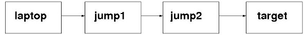
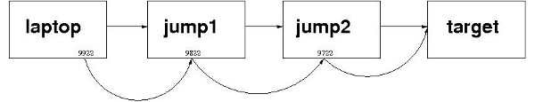
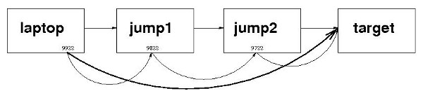

...making Linux just a little more fun!
Tunnel Tales 2
By Henry Grebler
Introduction
In a previous article, Tunnel Tales 1 I
described how to use SSH tunnels and a third machine to provide
network access from one machine to a second machine which was
otherwise not directly accessible. Today's scenario is quite
different.
We want convenient access to a machine which can only be reached by
navigating a chain of intermediate machines.
Whereas the earlier task could be accomplished with a single command,
the current task is far more formidable and requires more powerful
magic.
This article will assume that you are very familiar with SSH. I will
not repeat points I made in the earlier article.
Keywords: SSH tunnels, expect
The Scenario
Networks come in all shapes and sizes. I'm sure that the original
network was designed. I guess that, over time, a machine was added
here, another was removed there - much like a well loved suit might be
modified as its owner ages and changes shape.
By the time I arrived, the network was looking quite convoluted. It
was easy enough to get to the newer machines. But some of the legacy
machines required some serious tap-dancing before they could be
reached.

target the machine I need to work on
jump1 an intermediate machine
jump2 another intermediate machine
laptop my laptop
If I only needed to get to the target machine once or twice, I would
just ssh from my laptop to jump1; then again from
there to jump2; and finally from there to the target machine.
But I knew that I would be visiting target many times over the
next week or two. And further, and more interestingly, I would need to
transfer files between my laptop and the target machine.
Again, for transferring files, most people would suggest in
exasperation to just transfer them from one machine to the next until
they reached the required destination.
Analysing the Task
This task provides an educational "compare and contrast" with the task
of the earlier article.
- The previous scenario was handled by a single ssh
command. It should be obvious that we will need several commands this
time.
- The two endpoints previously were on remote machines (neither end
was on the laptop). This time the laptop constitutes one end of the
required tunnel.
The First Step
I invoke the following command on my laptop:
ssh -L 9922:localhost:9822 jump1
The command says to establish an SSH connection to
jump1. "While you're at it, I want you to listen on a
port numbered 9922 on localhost (ie
the laptop). If someone makes a connection to that port, connect the
call through to port 9822 on jump1."
Why 9922? The port number is arbitrary, but I use the
form XX22 to remind me that this relates to SSH.
Why 9822? It seems that this port number is as
arbitrary as 9922, but that's not entirely true.
We'll examine this a little later.
So far we have not achieved much.
The Second Step
The previous command landed me on
jump1, where I now
issue the following command:
ssh -L 9822:localhost:9722 jump2
You should be able to work out what this command does. Of course this
time, localhost means jump1.
The port number on the left (in this case 9822)
must be the same as the one on the right for the preceding
command.
Before I explain more, I'll just add one more command.
All Three Steps
By now, the last step should be obvious. (It isn't. There's one
final wrinkle.) To make the subsequent analysis easier to follow, I'll
list all three commands and then discuss.
ssh -L 9922:localhost:9822 jump1
ssh -L 9822:localhost:9722 jump2
ssh -L 9722:localhost:22 target

The three commands get me to the target machine, where I can do
whatever work I need to do. That's one effect. The side-effect is more
interesting.
Quite often, when I visit a machine, I like to run several sessions,
not just a single session. To start a second session, I could
use a similar set of ssh commands (with or without the
-L option). Or, on my laptop, I could just go:
ssh -p 9922 localhost
The reference to port 9922 on
localhost connects me to port 9822
on jump1, which automatically on-connects me to port
9722 on jump2, which automatically
on-connects me to port 22 on jump2.
The individual tunnels combine to provide me with a "super-tunnel".

Notes
-
It should be easy enough to extend my example from four machines to
any arbitrary number of machines. That's not rocket science.
-
It should now be clear that the ssh command that gets you to
the target (the last machine), must have 22 as the
port number on the right of localhost in the
-L option. All the previous ssh commands are
creating "stepping-stones". The last ssh command must take
you to the real port on which the SSH daemon listens (usually
22).
-
As in the earlier article, the arrows in the diagram are significant:
the tunnels are unidirectional for invocation. In other words, I can
use the tunnel to get to the target from my laptop; but I can't use
this tunnel to get to my laptop from the target. (I'd have to do
something different if that's what I wanted. I'll leave that as an
exercise for the reader.)
That's not really very restrictive. After all, I'm doing all this work
while I'm sitting at my laptop, using its keyboard, mouse and screen.
-
The last point may help clarify the difference between
-L (local) and -R (remote). The
tunnel can be described as having a "mouth" at one end - the end where
it is entered. (I may have chosen an unfortunate metaphor. Let's not
concern ourselves with the other end!) On the diagrams, the arrowheads
represent the other end of each tunnel.
Thus the previous article used -R because the mouth
of the tunnel was on a remote machine (remote relative to the machine
on which the ssh command was issued); whereas this article
uses -L because, in each case, the mouth of the
tunnel is on the local machine (the machine on which the ssh
command is issued).
-
Arguably of even more value than being able to ssh to the
remote machine in a single command is the ability to scp (or
rsync) to and from the remote machine in a single command.
Use commands of the following form:
scp -p -o 'port 9922' /path/to/single.file localhost:/tmp
scp -p -o 'port 9922' localhost:/path/to/single.file /tmp
RSYNC_RSH="ssh -o 'NoHostAuthenticationForLocalhost yes' \
-o 'UserKnownHostsFile /dev/null' -p 9922"
export RSYNC_RSH
rsync -urlptog /path/to/top_dir localhost:/tmp
-
It should now be clear what I meant by "unidirectional for invocation"
and why I said that that is "not really very restrictive". Yes, I have
to invoke commands on my laptop. But the copy commands of the previous
point can be used to transfer files in either direction (ie to
the laptop or from the laptop).
-
Bear in mind that the copies occur between the laptop and the target
machine in a single command not a single step. We
haven't found a magical way to bypass the intermediate machines. Under
the covers, the data goes from each machine to the adjacent machine in
the tunnel. We have only saved typing. But that's still hugely valuable.
-
Did anyone wonder why I kept using different port numbers?
Why did I not do this:
ssh -L 9922:localhost:9922 jump1
If you were going to ask this question, well spotted.
The way I have drawn the diagrams, and the way the problem originally
presented, it would have been perfectly reasonable to have all the
9X22 be the same. (The 22 would
still have to be 22.)
Because, of course, each ssh command is being issued on a
different machine, and ports only have to be unique on a single
machine (strictly, interface of a machine). [And that last little
parenthetic addition just taught me something. More later.]
It turns out that when I was attempting to solve the problem, I
was no longer at work. I was at home where I did not happen to have 3
spare machines available to simulate the conditions of the scenario.
Undaunted, I began to work through the problem by repeatedly
connecting back to my own machine. But this took away the premise of
an earlier paragraph: I was no longer issuing each ssh
command on a different machine. And so I had to use different port
numbers.
It does not hurt to use different port numbers; arguably, it makes the
solution more general. On the other hand there is a risk of running
out of port numbers if the chain gets ridiculously long.
It is important that the port number to the left of each
localhost (except the first) be the same as the port
number to the right of the previous localhost. So
that's an argument to keep it simple and only use one port number all
the way through (except for the final 22).
Getting there automatically
That's all you need to improve your life substantially when you
encounter a similar scenario.
What's that? You think that there is still too much typing? You want more?
Oh, all right.
Here's a fairly long expect script:
#!/usr/local/bin/expect -f
# ssh_tunnel.exp - ssh to a remote machine via intermediate machines
set timeout -1
set HOSTS [list jump1 jump2 target]
set PORTS [list 9922 9822 9722 9622 9522 9422 9322 9122 9022]
# The port of the last machine must be 22
set jj [llength $HOSTS]
lset PORTS $jj 22
set i 0
foreach HOST $HOSTS {
puts "HOST= $HOST PORT= [lindex $PORTS $i]"
set i [expr {$i + 1}]
}
send_user "\n"
#----------------------------------------------------------------------#
# Procedure to get to a machine
#----------------------------------------------------------------------#
proc gotomachine {lport rport host} {
send_user "Getting on to machine $host ... "
send -- "ssh -L $lport:localhost:$rport $host\r"
log_user 0
expect -exact "Starting .bash_profile"
expect -exact "Finished .bash_profile"
expect -exact "-bash"
send -- "env | grep SSH_CONNECTION\r"
log_user 1
send_user "done.\n"
}
#----------------------------------------------------------------------#
match_max 100000
set dollar "$"
spawn bash
log_user 0
expect -exact "-bash"
send -- "unset HISTFILE\r"
expect -exact "-bash"
send -- "unset ignoreeof\r"
expect -exact "-bash"
send -- "PS1='\nYou need one more exit to get back "
send -- "to where you started\nUse ^D. $ '\n"
expect -exact "started"
log_user 1
set i 0
foreach HOST $HOSTS {
set lport [lindex $PORTS $i]
set i [expr {$i + 1}]
gotomachine $lport [lindex $PORTS $i] $HOST
}
puts "
Houston, this is Tranquility Base. The eagle has landed.
You should now be able to get to this machine ($HOST) directly
using:
ssh -p [lindex $PORTS 0] localhost
To disconnect the tunnel, use the following repeatedly:
"
puts { [ "$SSH_CONNECTION" = '' ] || exit }
puts "
Good luck!
"
interact
exit
Notes
-
To adapt this script to your situation, you need only change the list
in the first command which references HOSTS (line 6).
-
The script can handle up to 9 other machines (line 7). If you need
more machines, simply add entries to the first command which
references PORTS.
-
For more information, see expect(1).
Tying up Loose Ends
When I developed the solution on my machine I was under the
misapprehension that I had no choice but to use different port
numbers. As I wrote this article, I said that ports only have to be
unique on a single machine - and then corrected myself and said they
only have to be unique on a single interface.
This opens the possibility of a simplification of the script
ssh_tunnel.exp - at the expense of setting up some
virtual interfaces on my single machine. If I were doing this from
scratch now, that's what I would do.
It gets very confusing constantly connecting back to a single machine.
That accounts for the large number of lines dealing with disconnecting
the tunnel. I was scared I would exit too often and blow my xterm away.
Risks and Analysis
This is a nice safe use of expect. As usual, I've set up
certificates on all relevant machines, so no paswords are necessary.
Conclusion
You should now have the tools to navigate conveniently across any
chain of machines.
Read with the previous article, this article should have given you
enough information to handle the earlier scenario without "cheating".
You should be able to extrapolate from these articles to almost any
configuration of machines.
Talkback: Discuss this article with The Answer Gang
![[BIO]](../gx/authors/grebler.jpg)
Henry has spent his days working with computers, mostly for computer
manufacturers or software developers. His early computer experience
includes relics such as punch cards, paper tape and mag tape. It is
his darkest secret that he has been paid to do the sorts of things he
would have paid money to be allowed to do. Just don't tell any of his
employers.
He has used Linux as his personal home desktop since the family got its
first PC in 1996. Back then, when the family shared the one PC, it was a
dual-boot Windows/Slackware setup. Now that each member has his/her own
computer, Henry somehow survives in a purely Linux world.
He lives in a suburb of Melbourne, Australia.
Copyright © 2010, Henry Grebler. Released under the Open Publication License
unless otherwise noted in the body of the article. Linux Gazette is not
produced, sponsored, or endorsed by its prior host, SSC, Inc.
Published in Issue 177 of Linux Gazette, August 2010